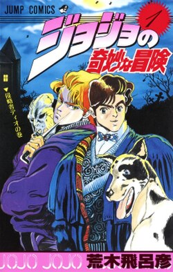

JoJo's Bizarre Adventure (Japanese: ジョジョの奇妙な冒険, Hepburn: JoJo no Kimyō na Bōken) is a Japanese manga series written and illustrated by Hirohiko Araki. It was originally serialized in Shueisha's shōnen manga magazine Weekly Shōnen Jump from 1987 to 2004, and was transferred to the monthly seinen manga magazine Ultra Jump in 2005. The series is divided into a total of nine main story arcs, each following a new protagonist bearing the "JoJo" nickname. JoJo's Bizarre Adventure is one of the largest manga series by number of volumes, with its chapters collected in 139 tankōbon volumes as of March 2026.
From 1993 to 2002, A.P.P.P. produced a 13-episode original video animation (OVA) adapting the manga's third part, Stardust Crusaders. The studio later produced an anime film adapting the first part, Phantom Blood, which was released in theaters in Japan in February 2007. In October 2012, an anime television series produced by David Production adapting Phantom Blood and Battle Tendency premiered on Tokyo MX. As of December 2022, the studio has produced five seasons consisting of 190 total episodes, adapting through the manga's sixth part, Stone Ocean. An anime adaptation of the manga's seventh part, Steel Ball Run was announced in April 2025. A live-action film based on the fourth part, Diamond Is Unbreakable, was directed by Takashi Miike and released in Japan in August 2017.
JoJo's Bizarre Adventure is well known for its art style and poses, frequent references to Western popular music and fashion, and battles centered around Stands, psycho-spiritual manifestations of the person's fighting spirit with unique supernatural abilities. The series had over 120 million copies in circulation by August 2023, making it one of the best-selling manga series in history, and it has spawned a media franchise including one-shot manga, light novels, and video games. The manga, TV anime, and live-action film are licensed in North America by Viz Media, which has produced various English-language releases of the series since 2005.
Plot
See also: List of JoJo's Bizarre Adventure characters
The universe of JoJo's Bizarre Adventure is a reflection of the real world with the added existence of supernatural forces and beings.[2] In this setting, some people are capable of transforming their inner spiritual power into a Stand (スタンド, Sutando), which are psycho-spiritual manifestations of a person's fighting spirit; another significant form of energy is Hamon (波紋; "Ripple"), a martial arts technique that allows its user to focus bodily energy into sunlight via controlled breathing. The narrative of JoJo's Bizarre Adventure is split into nine parts with independent stories and different characters. Each of the series' protagonists is a member of the Joestar family, whose mainline descendants possess a star-shaped birthmark above their left shoulder blade and a name that can be abbreviated to the titular "JoJo".[a] The first six parts take place within a single continuity whose generational conflict stems from the rivalry between Jonathan Joestar and Dio Brando, while the latter three parts take place in a second continuity where the Joestar family tree is heavily altered.